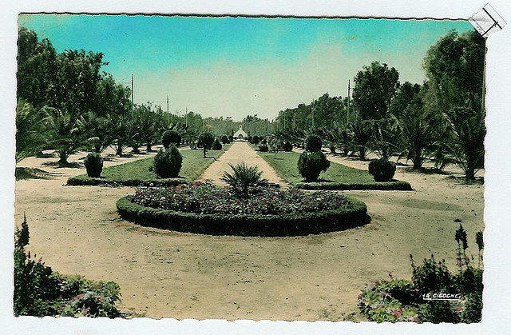
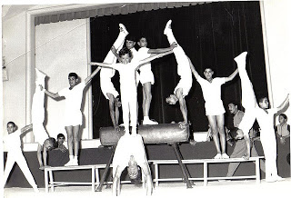
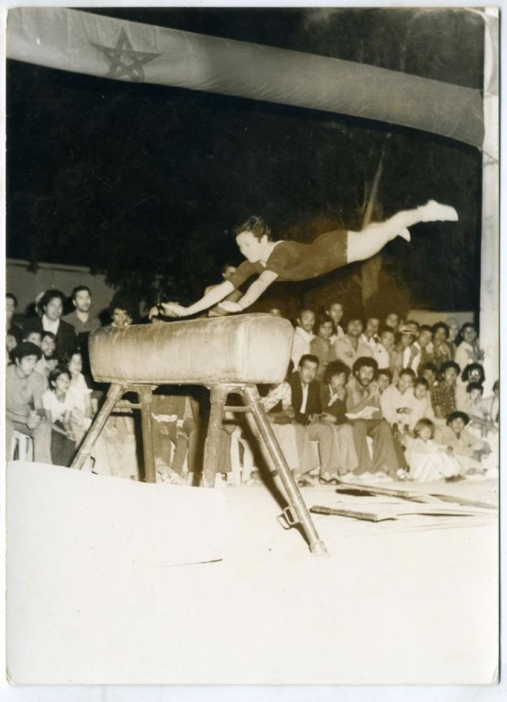

Envie de découvrir Youssoufia ? Il y a mille et une façons de le vivre. Ville ancienne très connue du royaume, les remparts
de la ville enceinte qui entoure l’ancienneté ville «Médina" et qui fût construite par les portugais, le château de mer,
la cathédrale portugaise, la citadelle Dar Essoltan, la forteresse Agouz, la mosquée de Sidi Chiker et la mosquée de Sidi
Dahmane voilà ce que constituent cette ville historique, vous vous y perdrez dans le passé.

En Savoir plus
Le sport est une source d’excellence pour la ville de Youssoufia depuis la présence des Français,
et brille encore jusqu’à nos jours à travers divers sports tels que la gymnastique.
La ville de Youssoufia a occupé une place importante aux niveaux national et international grâce au sport de la gymnastique.
Une petite salle a été construite pour former de petits gymnastes en 1983,

En Savoir plus
Dès que Naïma El Ghouati a mis les pieds dans ce club de sport à El Youssoufia, la ville où elle réside, elle n’en est plus sortie.
Elle n’avait que 5 ans et pourtant sa passion pour le sport était très grande au point de devenir sa seule préoccupation.
Naïma savait qu’elle était faite pour la gymnastique et c’est ce qu’elle a choisi pour sa carrière.
En 1985, à 11ans, elle intègre l’équipe nationale de gymnastique et commence alors à creuser son chemin

En Savoir plus